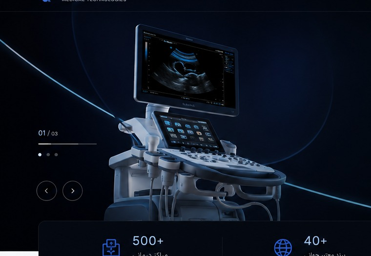

Precision
معرفی روشن و بدون ادعاهای غیرقابل تأیید.
یک برند معرفی و تأمین تجهیزات پزشکی با تمرکز بر وضوح، ساختار و پشتیبانی از تصمیمگیری.
Clinoro باید بهعنوان یک مرجع معرفی محصول و مسیر استعلام دیده شود؛ جایی که اطلاعات، خدمات و راهکارها برای مخاطب تجاری و فنی قابل فهم باشند.

معرفی روشن و بدون ادعاهای غیرقابل تأیید.
مسیر همکاری و اطلاعات قابل فهم.
توجه به خدمات و چرخه بهرهبرداری.